むぎゅ〜〜〜〜っ [梅吉]
クリアハンモックを覗き込む梅吉さん。
興味を持ってもらえる様にレジ袋の丸めたの（大好き）
おもちゃのマタタビクッキーなど入れてみました。

クリアハンモックから下がっているのはデフォルトのおもちゃ。
興味を持ったのは１〜2日だけだったので写真撮影のためにも取っちゃおうかしら・・・
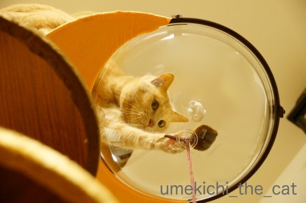
ていっ
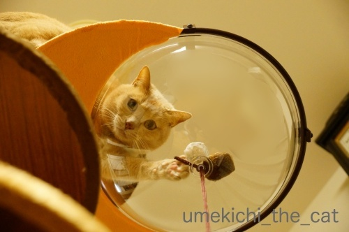
真下でカメラを構える下僕の観察も怠りません＾＾
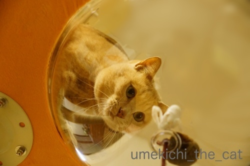
大きく身を乗り出して
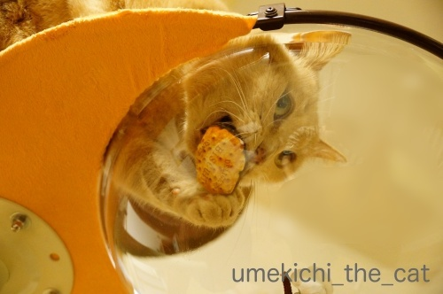
がぶ〜っ。
良いお顔ですねー0(≧▽≦)0
っと、ここでバランスを崩して
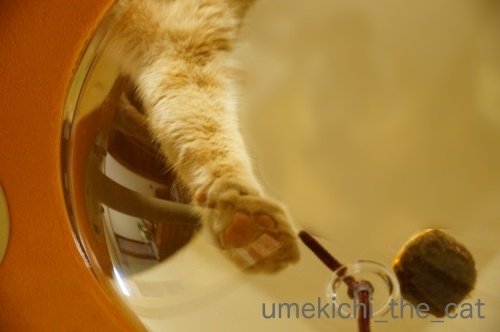
肉球、肉球！にくきゅーーーーーうぅぅぅ！！！
・・・・・でも、ちょっとわかりにくい写真ですよね。
引っ張った割にはむぎゅっとした肉球写真はこれしか撮れてませんw
申し訳ないです。
と、ここまでが予定稿だったのですが・・・
一昨日夜、梅吉は高いところが好きだからハンモックをてっぺんに付け替えよう！
そうすればもっと積極的に入るかも、とおっとが手直ししてくれました。
ステップも登りやすい様に位置を変えたり。
更にささみとマタタビ粉をまぶした羊毛ボールで梅吉を誘導。
（デフォルトのおもちゃは取り外しました）
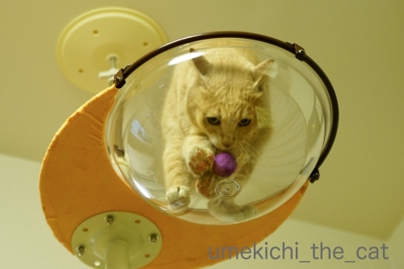
来たっ！
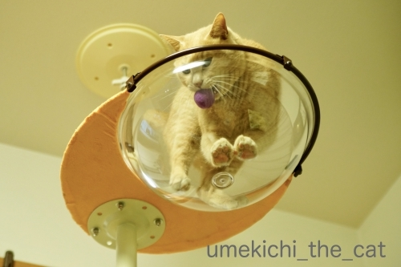
0(≧▽≦)0ヾ(*ΦωΦ)ﾉ(๑˃̵ᴗ˂̵)و (｣ﾟﾛﾟ)｣ (*>艸<)
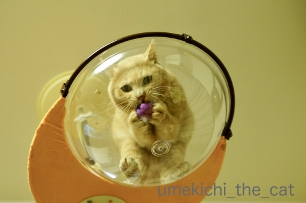
この写真はむぎゅっとした肉球は写ってませんがポーズ可愛かったから採用w
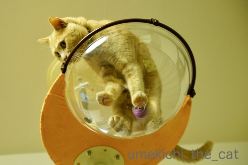
拡大します。
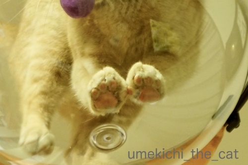
むぎゅ〜〜〜〜〜〜〜っ♡
いかがでしょうか。
ハンモックに入ることに抵抗はない様なのでこの先もきっと色々な姿を見せてくれるはず＾＾
後はどうやったらうまく肉球を写す事が出来るか、飼い主の試行錯誤になりそうです。
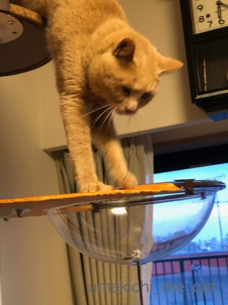
降りる時はこんな風に垂直になって上手におりてきます。
ステップの上段でまどろっこしくなって飛び降りるか、と思いましたが
意外や意外、ちゃんと下までステップを使って降りてきます。
怪我する心配が少し減りました＾＾
 ↑ガブッと一押し↑
↑ガブッと一押し↑
今日はZEPETO劇場お休みです。
読んでくださっている方ごめんなさいね・・・
ただいま鋭意編集中です！
大相撲大阪場所（３月場所）14日目（千秋楽の前の日）に行ってきました。
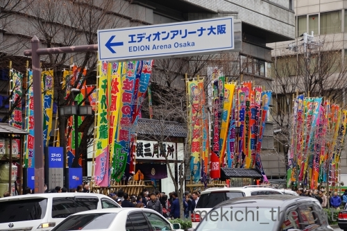
力士の入り待ちの人が道路に並んでいるので賑やかです。
人気力士が到着すると歓声が上がります。
一般客と力士の入り口は一緒なので人気力士の前を歩くと
自分が声援を受けている様な気分になれますよw
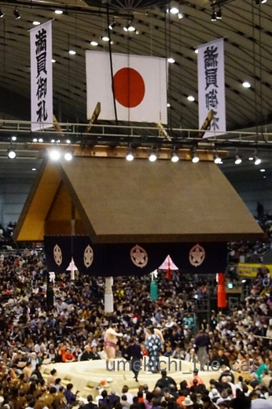
この日は満員御礼でした。
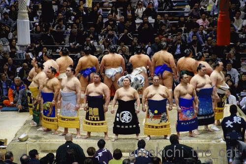
幕内力士の土俵入り。最後に手をあげる動作がなんだか可愛いのです＾＾
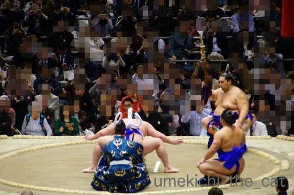
横綱白鵬の土俵入り。向正面にすわったので後ろ姿ですみませんw
この方については好き嫌いが分かれると思いますが貫禄は抜きん出ています。
土俵入りの姿も美しい。
大相撲は興行娯楽ですが神事でもあります。
横綱土俵入りには神が降りてきている、と感じる瞬間も。
大相撲協会、力士の方々にはそれを忘れないでいただきたいです。
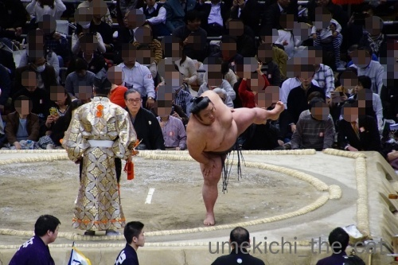
昨日大関に昇進した貴景勝（芦屋市出身）。
逸ノ城相手に負けちゃいましたが会場は盛り上がりました。
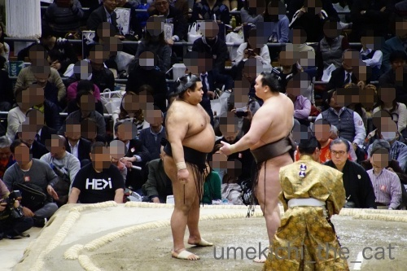
横綱白鵬と大関高安の取り組み。
立会いでこんな感じのにらみ合いが２度ほど。仕掛けたのは白鵬かと。
この方のこういう心理戦みたいなのがちょっとにがて・・・(⌒-⌒;
勝ったのは白鵬でした。
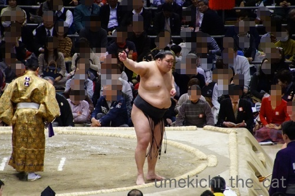
一番会場が沸いたのは寝屋川市出身の豪栄道の取り組み。
横綱鶴竜相手に勝ちました！会場大喜び＾＾
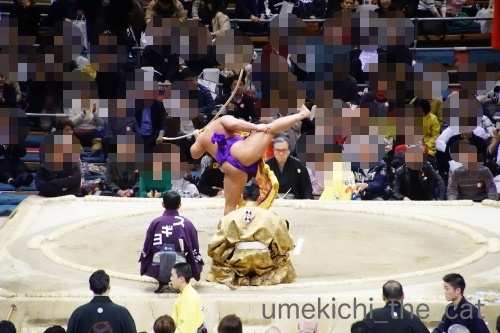
弓取り式も大切な儀式です。
テレビ中継ではカットされちゃうことが多いですが
会場にお運びの際は是非ご覧になってくださいね。弓さばきが美しいです。
相撲のファンなのか？と聞かれると困るのですが・・・
うちの近くの神社は相撲にとてもゆかりのあるところだし
場所中は立浪部屋の宿舎になるので先着隊＆後発隊を合わせると
３週間近く毎日お相撲さんを見かけます。
縁があるかな、とチケットが取れる限り大阪場所は見に行ってます。
テレビからは感じられない力士の気迫に圧倒されて
立会いから人柄を推し量ることができたりして楽しいですよ。
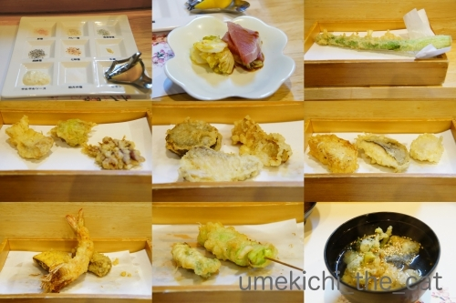
帰りは天ぷらを食べに行きました。
カウンターで食べたのは久しぶり。
季節のおすすめコースにしたのでアスパラ、ふきのとう、タラの芽など。
春の息吹を感じてきました。
興味を持ってもらえる様にレジ袋の丸めたの（大好き）
おもちゃのマタタビクッキーなど入れてみました。

クリアハンモックから下がっているのはデフォルトのおもちゃ。
興味を持ったのは１〜2日だけだったので写真撮影のためにも取っちゃおうかしら・・・
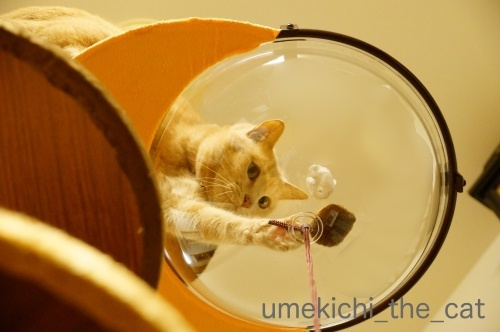
ていっ
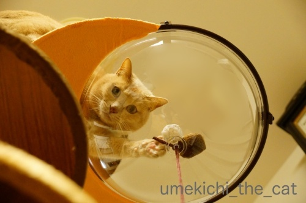
真下でカメラを構える下僕の観察も怠りません＾＾
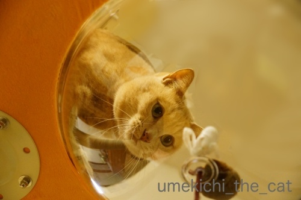
大きく身を乗り出して
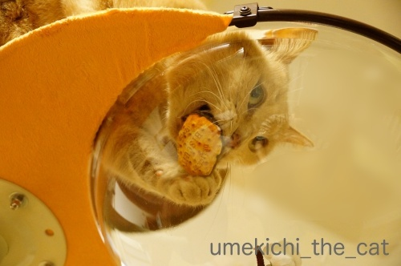
がぶ〜っ。
良いお顔ですねー0(≧▽≦)0
っと、ここでバランスを崩して
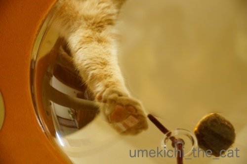
肉球、肉球！にくきゅーーーーーうぅぅぅ！！！
・・・・・でも、ちょっとわかりにくい写真ですよね。
引っ張った割にはむぎゅっとした肉球写真はこれしか撮れてませんw
申し訳ないです。
と、ここまでが予定稿だったのですが・・・
一昨日夜、梅吉は高いところが好きだからハンモックをてっぺんに付け替えよう！
そうすればもっと積極的に入るかも、とおっとが手直ししてくれました。
ステップも登りやすい様に位置を変えたり。
更にささみとマタタビ粉をまぶした羊毛ボールで梅吉を誘導。
（デフォルトのおもちゃは取り外しました）
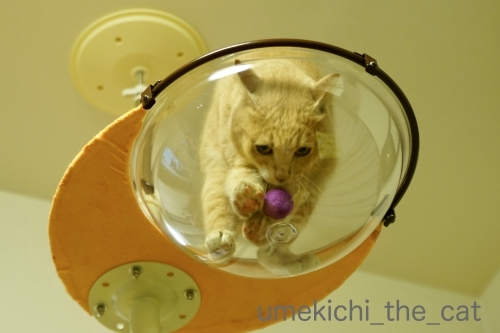
来たっ！
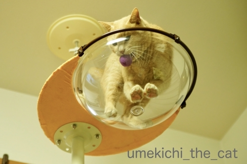
0(≧▽≦)0ヾ(*ΦωΦ)ﾉ(๑˃̵ᴗ˂̵)و (｣ﾟﾛﾟ)｣ (*>艸<)
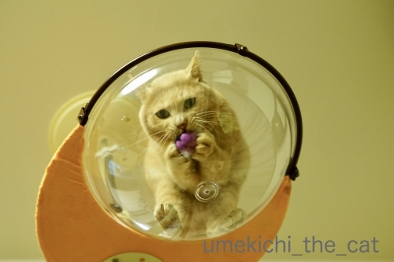
この写真はむぎゅっとした肉球は写ってませんがポーズ可愛かったから採用w
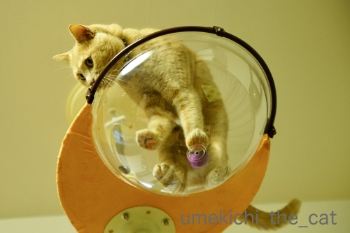
拡大します。
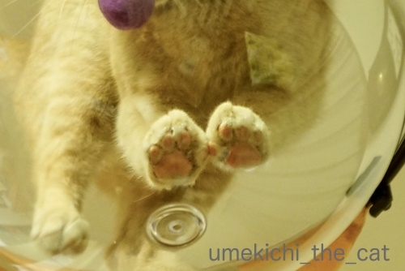
むぎゅ〜〜〜〜〜〜〜っ♡
いかがでしょうか。
ハンモックに入ることに抵抗はない様なのでこの先もきっと色々な姿を見せてくれるはず＾＾
後はどうやったらうまく肉球を写す事が出来るか、飼い主の試行錯誤になりそうです。
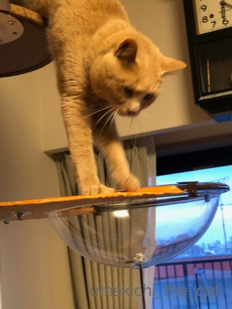
降りる時はこんな風に垂直になって上手におりてきます。
ステップの上段でまどろっこしくなって飛び降りるか、と思いましたが
意外や意外、ちゃんと下までステップを使って降りてきます。
怪我する心配が少し減りました＾＾
今日はZEPETO劇場お休みです。
読んでくださっている方ごめんなさいね・・・
ただいま鋭意編集中です！
大相撲大阪場所（３月場所）14日目（千秋楽の前の日）に行ってきました。
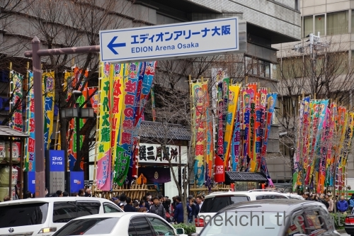
力士の入り待ちの人が道路に並んでいるので賑やかです。
人気力士が到着すると歓声が上がります。
一般客と力士の入り口は一緒なので人気力士の前を歩くと
自分が声援を受けている様な気分になれますよw
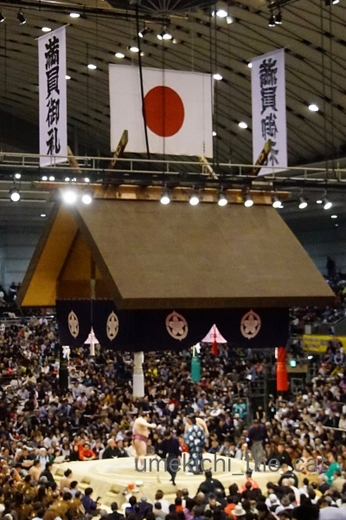
この日は満員御礼でした。
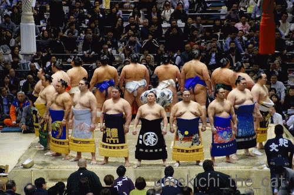
幕内力士の土俵入り。最後に手をあげる動作がなんだか可愛いのです＾＾
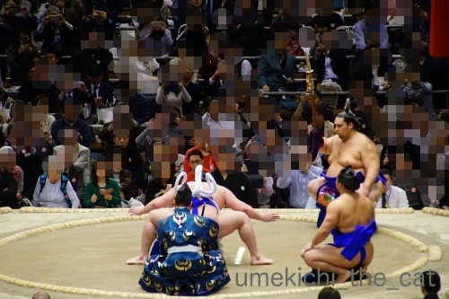
横綱白鵬の土俵入り。向正面にすわったので後ろ姿ですみませんw
この方については好き嫌いが分かれると思いますが貫禄は抜きん出ています。
土俵入りの姿も美しい。
大相撲は興行娯楽ですが神事でもあります。
横綱土俵入りには神が降りてきている、と感じる瞬間も。
大相撲協会、力士の方々にはそれを忘れないでいただきたいです。
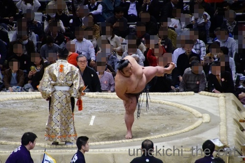
昨日大関に昇進した貴景勝（芦屋市出身）。
逸ノ城相手に負けちゃいましたが会場は盛り上がりました。
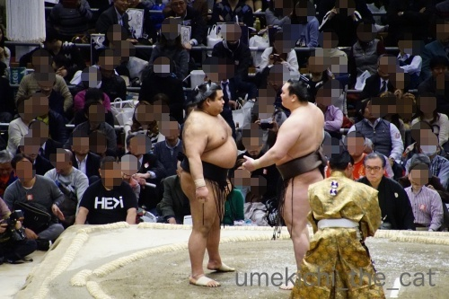
横綱白鵬と大関高安の取り組み。
立会いでこんな感じのにらみ合いが２度ほど。仕掛けたのは白鵬かと。
この方のこういう心理戦みたいなのがちょっとにがて・・・(⌒-⌒;
勝ったのは白鵬でした。
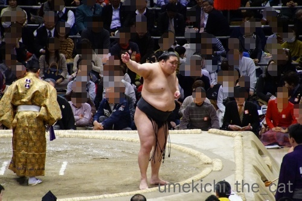
一番会場が沸いたのは寝屋川市出身の豪栄道の取り組み。
横綱鶴竜相手に勝ちました！会場大喜び＾＾
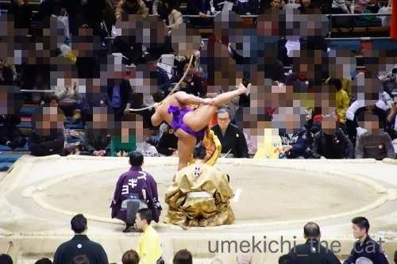
弓取り式も大切な儀式です。
テレビ中継ではカットされちゃうことが多いですが
会場にお運びの際は是非ご覧になってくださいね。弓さばきが美しいです。
相撲のファンなのか？と聞かれると困るのですが・・・
うちの近くの神社は相撲にとてもゆかりのあるところだし
場所中は立浪部屋の宿舎になるので先着隊＆後発隊を合わせると
３週間近く毎日お相撲さんを見かけます。
縁があるかな、とチケットが取れる限り大阪場所は見に行ってます。
テレビからは感じられない力士の気迫に圧倒されて
立会いから人柄を推し量ることができたりして楽しいですよ。
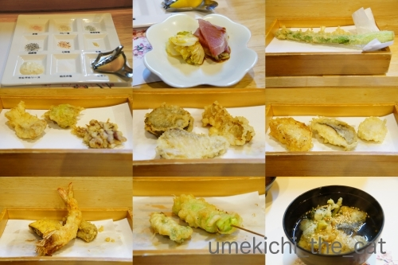
帰りは天ぷらを食べに行きました。
カウンターで食べたのは久しぶり。
季節のおすすめコースにしたのでアスパラ、ふきのとう、タラの芽など。
春の息吹を感じてきました。
2019-03-28 00:00
nice!(83)
コメント(33)

カフェオレ色の梅吉

梅吉 2023年8月10日 永眠


梅吉と出会った譲渡会

犬猫の理由なき殺処分ゼロ
妄想広告
UMEKICHI 光

爆発的に早い！
時々攻撃的！
Thanks to Mr.Boss365
爆発的に早い！
時々攻撃的！
Thanks to Mr.Boss365

下から見る梅吉さん!! むぎゅっな肉球がたまりませんね。可愛いですぅ。
by zombiekong (2019-03-28 00:29)
凄い！大阪場所しかも千秋楽最高ですね^^
梅吉さんは猫相撲の横綱かな？
by ニコニコファイト (2019-03-28 06:36)
楽しく使ってくれてますね＾＾
by ぽちの輔 (2019-03-28 07:15)
おぉ～♪ 梅吉さんも飼い主も楽しめるキャットタワー(^^♪
梅吉さんの肉球もギュッっとした姿も
可愛過ぎますねぇ～(#^.^#)
by きぃ (2019-03-28 07:55)
あぁ、透明ハンモックで遊ぶ梅吉さんの
お顔と肉球が素敵すぎて画面から目が離せません☆*:.｡. o(≧▽≦)o .｡.:*☆
あぁ、耐荷重が１０kgまであればうちも肉球が楽しめ・・・
あっ、もふもふに隠れて肉球が見えないか
下でカメラ構える私を警戒して入らない可能性がw
梅吉さんに癒してもらおうっと♪( ´▽｀)
by ニッキー (2019-03-28 08:18)
ハンモックの移動、大正解でしたね。
下から肉球とお顔が見える光景は至福ですね～(^_^)
by kou (2019-03-28 08:24)
こんにちは。
レンズ効果？下向きのせいで、梅吉君の新たな表情をゲットですね！！
ちぃさんの「ニャとした笑顔」が浮かびます（笑）
肉球も良いですね！！そのまま静止して欲しい感じです。
揃えた両手の肉球は１００点満点です（笑）
怪我はしない感じですか・・・購入しようかな？（悩）
大相撲観戦、アフロなちぃさん見かけませんでした？残念です。
大相撲＝神事ですね。場外での話題が多すぎました。
豪栄道！！観客の応援半端じゃない感じ（テレビ観戦ですが・・・）。
大相撲観戦を満喫＆天ぷらでお腹も満腹な感じですね！？(=^･ｪ･^=)
by Boss365 (2019-03-28 10:26)
うちもデフォルトでついていたおもちゃは
取りつけなかったです^^
うちのばあいは、もしもそれで遊んで
足を踏み外して落ちたら困るから(笑)
梅吉君、きたきたーーー！
下に寝転んで、ずっとにやにやしながら見ていたいｗｗ
ここで寝てくれるようになるかなー^^
相撲行ってきましたね！
たしかに会場で見たら楽しいのかなーって思ったわ^^
でもなにより天ぷらにひかれます(笑)
by リュカ (2019-03-28 10:51)
いや～ん、ぴんくの肉球最高♪
おでこや鼻もむぎゅっとなってます？？猫変態を悶絶させるにこれほど魅力的なアングルはありませんね(#^^#)
やっぱり欲しいな～リビングのソファ捨てようかな～^^;
大相撲、ウチの近くにも高砂部屋があり、普通にコンビニで買い物している若い力士を見かけます。
私も特にファンではないですが、父が相撲好きで小さい頃からずっと一緒にテレビで見てたので結構詳しいです(^▽^;)
季節の天ぷら、いいですね！ 目の前で揚げたて、油の後始末不要、最高！！
by ゆきち (2019-03-28 12:04)
むぎゅーーっ❤最高ですね(*´ω｀*)
これが見たいし、これが撮りたいです♪
透明ボウルいいなぁ。でも、うちのはもう
いいお年なので冒険するのは諦めます＾＾
どうしても撮りたい時は、ガラスのローテーブルを
買って、下から撮るとか考えます(笑)
大相撲、生で見たことないですーーｗ
迫力でしょうね♪でも私も天ぷらのほうに
クギヅケになりました(笑)
by カトリーヌ (2019-03-28 14:28)
肉球むぎゅ～～～っ♪きた～～っ(≧▽≦)
これは、夢中になって写真を撮ってしまいます～♪
私も下からくるみたちの肉球むぎゅ～を楽しみたい！！
今のキャットタワーが壊れたら、考えよう！
お相撲。亡くなったおばあちゃんが大好きでした。
まだ小さかった私には何が面白いのかよくわからなかったけど、
TVも欠かさず見ていたし、たまにおしゃれしてみに行くのも楽しみだったみたい。
場所中、毎日お相撲さんを見かけるなんて。
お相撲好きにはたまらないでしょうね(*^-^*)
by emi (2019-03-28 15:49)
梅吉さん in in ＼(^o^)／
待ってましたこの瞬間！最高です
一日中見ていられますね 可愛いです
お相撲の円陣 両手を挙げて まわしをパンパン 意外と可愛いですよね 知り合いの関係で何度か行ったことがありますが楽しかったです(^^)
by チャー (2019-03-28 17:09)
クリアなハンモックって・・・
自分が・・・と考えると結構怖いですｗ
高所恐怖症のニャンコっていないですよね(^_^;)
お相撲、昔は好きだったのに、最近難しくって人間関係がｗ
でも、間近で拝見できるって、やっぱり良いなぁ～～～♪
by 甘党大王 (2019-03-28 17:58)
これだと肉球が見放題ですね！
梅吉さん、インして遊んでいますね(^^)
by ma2ma2 (2019-03-28 18:14)
にくきうーーーーー^m^
むぎゅーーーーー、かわゆすです。
あー、なんで、肉球ってこんなにかわいいのでしょう。
かわいいのは、肉球だけじゃないけどー。
これからもいろんな様子が見られるかなー。楽しみですね。
ハンモックで丸くなるのも見たいなー。
お相撲、生では見たことないです。
いろいろ行事？もあるし、興味深いですねー。
by ChatBleu (2019-03-28 21:31)
おお。高い場所ほどクリアハンモックに興味があるってことは
私のように高所恐怖症ではなさそうですね。^^; ｿﾘｬｿｳﾀﾞ
クリアハンモック越しに肉球を押したくなりますねー。^^)
by yes_hama (2019-03-28 21:42)
梅吉さん、クリアハンモックの向こうからカメラ目線（笑）
デフォルトのおもちゃ、無くなると画面がスッキリしましたね。
拡大すると、こんな風についてたのですね。
クリアハンモックの中を観察する梅吉さんムギューの肉球、
ピンクですよ（笑）いいなぁ。
後は、リラックスしてネムネムでもしてくれると嬉しいですね（笑）
梅吉さん、おもちゃの下におかーさんがいるという、
いつもと違う風景に戸惑っていませんか？（笑）
by kiki (2019-03-28 21:53)
梅吉さん、来た来たっ！
ていっ、がぶっ、むぎゅう～っとね♪
抱えているところも可愛いです。
下を見てくる視線もかわゆ～い＾＾
お相撲をよく見に行けるなんて、いい環境ですね。
お相撲さんとすれ違ったことぐらいしかありませんが、いい香りがして、違う世界の人という印象でした。有名じゃない人たちだったと思いますが、みんなニコニコして見ていましたね＾＾
by sana (2019-03-28 23:59)
下から目線面白いニャ。肉球もいいし～
でも、人間を下から撮ると盗撮って言われちゃうから気をつけろ（ﾟ□ﾟ）
by 英ちゃん (2019-03-29 00:03)
にくきゅうキターー（ ゜∀ ゜）ーーッ！
一枚板越しでもいい、下からプニプニやりたくなります。
両お手ての写真もきゃわわです（*´∀｀*）
我が家のハンモックのような、柔らかい布タイプで
下から指で身体をなぞってコーフンさせるのも楽しいですよ♪
エディオンアリーナ・・・＝相撲ってイメージ湧かないですね^^;
最近、名称が企業名すぎて元が何だか全然分かりません^^;
by Ja-Kou66 (2019-03-29 00:36)
にくきゅーー♡
でも球体に収まる姿も宇宙っぽくて（？）いいですぅーー
by liang (2019-03-29 08:59)
なるほとー。にゃんこ好きの皆さんの
肉球愛というか、反応が凄いわー(^_^;)
コメント欄がいつもより熱く感じます！
大相撲、生で見たことないんですわー。
開催前日の土俵祭りなるものは行きましたが。。。
by よーちゃん (2019-03-29 09:07)
肉球ごちそう様です(≧▽≦)
by palpal (2019-03-29 16:09)
アクロバットしてるような姿ですが、
マタタビの効果は無かったのでしょうか？。
by 旅爺さん (2019-03-29 16:42)
クリアハンモックの醍醐味が♪
いいなぁピンクの肉球(笑 うちはふたりともあずき色～～
デフォルトのおもちゃがない方がいい感じに映え～ですね。
大阪場所、毎年楽しみにしているコアなファンの方も多いので
結構競争率高いからチケット入手も大変かと思います。
何といっても生活道路でお相撲さんの姿を生で見られるなんて希少だわん♪
実際の取組はテレビで見るより何百倍も面白いのだろうと思います。
by marimo (2019-03-30 20:24)
ふふ、肉球 かわいいでやす～o（◎o◎）o
by ぼんぼちぼちぼち (2019-03-30 20:24)
下見て ゾクってしたりするんですかねぇ？
なんか可愛い（＾＾）
by (。・_・。)２ｋ (2019-03-31 00:09)
おお！入ってる入ってる♪
クッキー食べる顔いいなぁ。
楽しみが増えましたね~！
by ふにゃいの (2019-03-31 14:33)
ご訪問＆Niceありがとうございます。
ピンクの肉球可愛いですね。
家にいた猫は、黒い肉球で写真を撮ろうとは思いませんでした。
by caterham_7 (2019-03-31 15:46)
zombiekongさん＞
肉球むぎゅっ、ああ生で見ていただきたいです！
たまらないですよー＾＾
ニコニコファイトさん＞
優勝争いがかかってくる場所終盤は盛り上がります！
私が行った日も熱気ムンムンでした＾＾
ぽちの輔さん＞
気に入ってくれているのは確かです(≧▽≦)
今までで一番高いベッド位置。下僕を見下ろしてますよ＾＾
前回コメントいただいたPL、
おっとが持ってたので付けてみたんですが
残念ながらあまり変わりませんでしたorz・・・
きぃさん＞
この透明のハンモックの中で遊んでくれると
今まで以上にいろんな表情が楽しめます！
寝顔はこんな（ブチャイクなw）顔してるんだなという
新しい発見もw
ニッキーさん＞
今まで見られなかったアングルの遊ぶ姿や寝姿は
思った以上に素敵すぎました(*>艸<)
にやにやしながらおちりや背中を見上げていたら
梅吉が不審そうな顔して見下ろしていることがwww
ニッキー家のにゃんずさんの肉球、
上手くもふもふをかわして見ることが出来たなら
ギュムムムッ！とすごく潰れていそうで
想像しただけで鼻血が出て来そうです(*>艸<)
kouさん＞
ハンモックの位置の付け替え、やってもらって良かったです！
お顔と肉球に続いておしり、背中が見えて来ました0(≧▽≦)0
全身むぎゅ！も楽しみでーす＾＾
Boss365さん＞
透明なハンモック越しに今まで見られなかった
梅吉の表情ゲットです！
もーたまりませんわwww
ぶっちぎりトップは押しつぶされた肉球ですが
潰れたおちり、背中、
果てはぎゅむっとなったブランケットでも萌え萌えできます！
ステップの広さや高さの感覚をつかむまで
梅吉がずり落ちそうになったのは一回だけ。
ほとんどがステップにすわってじっとしているか
ハンモックに入っているかなので危ないな、と感じたことは我が家はありません。
大相撲、ペー＆パーさんたちの様に注目されては困るので
ノーマルスタイルで観戦しましたwww
大阪場所での豪栄道コールは毎回すごいのですが
今回は特に声援が大きかったです。
豪栄道もここ一番で勝ちきれない。
がんばれー！と大阪の人たちからのエールでしょうか。
リュカさん＞
デフォルトおもちゃ、たしかに夢中になったら怖いかもね。
うちも取りましたが、取った後の穴から
ひもやじゃらしの柄を出し入れすると大興奮ですよん。
ハンモックは現在おびき寄せ作戦（？）が上手くいってます！
もともとあまり慎重ではない子だから
思ったより早くなにもないハンモックで寝てくれる様になるはずー(≧▽≦)
てんぷら、美味しい美味しいって食べたは良いけど
思い出そうとしても何食べたか全部は思い出せなくてw
おっとが写真撮ってたからなんとか記憶を辿れたけどー(⌒-⌒;
ヒラメの天ぷらは初めて食べました！
ゆきちさん＞
さすが！猫変態の方は目の付け所が違います！！
おもちゃを咥えようとしてお鼻、おでこもぎゅむむっとなりますとも(≧▽≦)
寝るとき顔をハンモックに沿わせると自然と引き上がっちゃうのか
歯をむき出して寝ているお顔も確認できました(*>艸<)
毎日新発見でカメラ！カメラ！！で家事等が進みませんwww
ハンモックはないですがゆきちさんちのタワーに設置できそうな
透明のステップがありましたよ。
型が合わなくて設置できないタイプだったらごめんなさいm(_ _)m
高砂部屋、元朝潮関の部屋ですね！
若い力士、幕内力士に比べるとまだ体も小さい、はずなのですが
それでもでっかいですよねー！
２〜３人連れ立ってスーパーで食材を物色している姿が笑えます。
ママチャリ乗って帰るときもあるのですがサーカスの熊さんが
自転車乗っているみたいでさらに笑えますwww
by ちぃ (2019-03-31 16:01)
カトリーヌさん＞
ガラスのローテーブルも良いですよね！
面積的にはテーブルの方がバッチリだし＾＾
写真を撮るには寝っ転がってカメラを構えて、が必須ですね(*>艸<)
お姿を想像すると笑えます、
って私もタワーの下に寝転がって写真を撮りましたともっwww
おっとに笑われましたよ(⌒-⌒;
大相撲、取り組みも大迫力ですが会場警備や入口モギリに
元力士の方々がいらしゃるのも面白いです。
昨年はトイレに行こうと暗い階段の踊り場を曲がったら
もと琴欧洲関がいて（でかいw）心底びっくりしました。
びっくりし過ぎて握手してくださいとか言えませんでしたー(-_-メ)
今年は元横綱稀勢の里を探しましたが見つけられずw
どうやら解説をしてたみたいです。
emiさん＞
そうなの！
すべてが新鮮なので事あるごとにカメラ！カメラ！！で
家事等がなかなか進みませんw
なんたって寝ているだけでも絵になるからー＾＾
このキャットタワー、あまり場所もとらないし圧迫感も少ないので
家にすんなり馴染みました。
おすすめかも！
くるみちゃんタラくんのむぎゅっ！とした肉球見たいわー(≧▽≦)
私もお相撲はおばあちゃんと一緒に見てました。
北の湖全盛時代でおばあちゃんが「憎らしいほど強い！」
と言ってたのを覚えているだけで他の事は覚えてないけどw
近所の神社では朝稽古の見学も出来ます。
朝早くから熱心なファンが集まって活気がありますよー。
私は一度見に行きました＾＾
チャーさん＞
お待たせしました！
ハンモックの反射で光った画像になってしまうので
ちょっと見にくいかもしれませんが・・・
喜んでいただけて嬉しいです0(≧▽≦)0
お相撲会場に行った事ある方、発見！！
テレビで見るとは違った迫力、楽しいですよね＾＾
まわしパンパン、よいしょ、ばんざーい、ですよねー(*>艸<)
甘党大王さん＞
猫の体高とタワーの高さ、それを自分に置き換えると・・・
私は高所恐怖症ではありませんがゾワっとしちゃいますw
私が前に飼っていた猫は高いところに上がりませんでしたよー。
怖かったのか（太り気味だったので）にぶチンだったからなのか
詳細は不明ですが(*>艸<)
最近の大相撲はワイドショー的ネタが多過ぎますよね(⌒-⌒;
ma2ma2さん＞
毎日ムギュッとつぶれた肉球祭りです(≧▽≦)
遊ぶのも登るのも楽しそうです♪
ChatBleuさん＞
ただでさえ可愛い肉球が押しつぶされて
魅力も凝縮！って感じです0(≧▽≦)0
背中やお尻もぎゅむってなると可愛さ倍増で
ニヤニヤしながら眺めているとあっという間に時間がー！！
ここ２〜３日でハンモックに入って寝る様になったので
（ただしブランケット越し）
この先もいろいろな姿が楽しめそうです＾＾
お相撲、我が家の近くの神社が宿舎じゃなかったら
（ちなみに場所前の奉納土俵入りもこの神社）
見に行かなかったと思います。
ちょっとしたキッカケ、ですね(^_－)☆
yes_hamaさん＞
高い場所、ダメでしたかー＾＾
梅吉は高い場所ほど燃えるようで
今は毎日一番高いところから下僕を見下ろしておりますw
クリアハンモック越しににくきゅうちょいちょい、
もちろんやしましたとも！！
ちょいちょいお手手が返ってきましたよ(*>艸<)
kikiさん＞
デフォルトのおもちゃ、取って良かったです。
写真の写しやすい事！
おもちゃを通す穴が空いているのですが
そこから紐やじゃらしの柄をちょいちょい出すと大層お喜びです(*>艸<)
ハンモックには現在リラックスしてネムネムしていただいております！
ただしブランケット付き。
トレーニング期間でーす。
夏には「ひんやりして気持ち良い」と思ってもらえるかな？と期待大！！
sanaさん＞
下から見る仕草は今までとはちょっと違った可愛さが！
毎日新鮮なポーズが見られてタワーに釘付けの下僕ですwww
本ニャンも気に入ってくれている様で
ご飯後の毛づくろいはステップの上ですることが多くなりました＾＾
お相撲さん、宿舎の近くに行っただけで鬢付け油の香りがぷ〜んと。
場所中、幕下の力士の方は自力で移動するのでよく電車にも乗ってます。
（幕内力士になると専用車で移動）
電車内にぷ〜んと独特の香りが漂っているのですぐわかります。
大阪の人は慣れているんでしょうねー。
皆さんあまり見てません。
私はチラチラ見ちゃうんですけどーwww
by ちぃ (2019-03-31 16:52)
英ちゃん＞
下からにゃんこ、なかなかの眺めですよーwww
人間、は興味ないので撮りませんってば(*>艸<)
Ja-Kou66さん＞
もちろん板越しにプニプニしましたよw
ていていぱんちが返ってきました(*>艸<)これもまた楽し♪
柔らかい布タイプもね・・・・
肉球の形がダイレクトに出てたまらんですよねー。
実は別売りで布タイプのハンモックがあってこのタワーに設置できるのです！
またポイントが貯まったら、考えようかしら。
エディオンアリーナ、
前の名前はボディメーカーコロシアムって大層な命名でしたw
でも大阪の方は「府立体育館」って呼んでいると思われます(⌒-⌒;
liangさん＞
そうそう！
球体に収まっているとアウタースペースの生物って感じがします＾＾
SFチック(*>艸<)
よーちゃん＞
そうなんですよー0(≧▽≦)0
肉球好きおよび猫変態の方々から
熱いコメントを多数いただきました！
梅吉のムギュッとした肉球を見てコーフン、
これが我が子のだったら、と想像してまたコーフンと思われますw
大相撲、未見とは意外です！
落語ネタ、になりませんか？ならないですよね・・・
取り組みはなかなかも面白く
周りの（声がでかいので聞こえてくる）おっちゃんたちの
ウンチクと「知らんけど」的な勝手なご意見もなかなか楽しいです。
それは大阪だからかしらwww
palpalさん＞
もうお腹いっぱい、と言われるまでネタにしますよ(*>艸<)
旅爺さん＞
アクロバティックな動きは大得意なのであります＾＾
梅吉は（舐めはしますが）マタタビにあまり興奮しない子なのです。
普段からテンション高いですからーwww
by ちぃ (2019-03-31 17:55)
marimoさん＞
あら、あずき色の肉球も素敵です♪
つやっピカ度が際立つじゃないですか(*>艸<)
デフォルトおもちゃは取ってスッキリしました。
梅吉も無くなっても全く気にしていなかったので
良かったです＾＾
大相撲、ニュースで人気に陰りが？
なんて言われている時期もありましたが
そんな時期でもチケットは争奪戦でしたよw
ニュースって当てにならないなって思いました。
我が家は先行予約か一般売り出し初日に
チケットサイトではなく大相撲協会のHPから買ってます！
これだと比較的手に入りやすいです。
ぼんぼちぼちぼちさん＞
肉球好きにはたまらない、ですよー0(≧▽≦)0
喜んでいただいて嬉しいです！！
２kさん＞
違和感もあるかもしれませんがゾクッとはしてないと思われます。
普段見えないアングルが見えて興味津々とも言えるかもw
煽り気味のアングルって人間も動物も可愛いですよね＾＾
ふにゃいのさん＞
入ってくれましたー0(≧▽≦)0
がぶ〜って顔はこのアングルで見たのは初めてなので
大収穫でした。
変顔ほど可愛いと思っちゃいますwww
この先しつこいくらいタワーネタが続くと思われます。
どうぞよろしくお願い致します(*>艸<)
cater ham_7さん＞
コメントありがとうございます＾＾
黒い肉球も素敵ですよ♪
黒いダイヤとでも称えたくなっちゃいます！！
by ちぃ (2019-03-31 20:21)